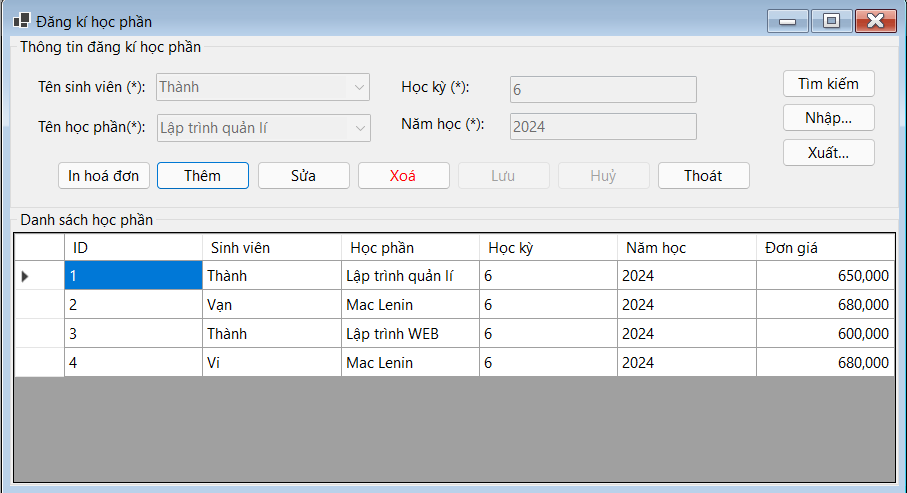

Hướng dẫn sử dụng màn hình Đăng kí học phần.
Cách dùng: Chọn Dữ liệu: Nhấp chuột vào hàng trong DataGridView để chọn học phần đăng kí cần sửa hoặc xóa, sửa Dữ liệu: Chọn hàng, nhấn Sửa, chỉnh sửa thông tin và nhấn Lưu, xóa Dữ liệu: Chọn hàng, nhấn Xóa và xác nhận, cập nhật DataGridView: Sau mỗi thao tác, nạp lại dữ liệu để cập nhật thông tin mới nhất.
Bước 1: Nhấn nút Thêm.
Bước 2: Các trường nhập liệu (combobox, textbox) sẽ được kích hoạt.
Bước 3: Chọn sinh viên từ combobox cboSinhVien.
Bước 4: Chọn học phần từ combobox cboHocPhan.
Bước 5: Nhập học kỳ vào txtHocKy.
Bước 6:Nhập năm học vào txtNamHoc.
Bước 7: Nhấn nút Lưu để lưu đăng ký học phần mới.
Bước 1: Chọn dòng cần sửa trong dataGridView.
Bước 2: Nhấn nút Sửa.
Bước 3: Các trường nhập liệu sẽ được kích hoạt.
Bước 4: Sửa các thông tin cần thiết trong các trường nhập liệu.
Bước 5: Nhấn nút Lưu để lưu lại thông tin đã sửa.
Bước 1: Chọn dòng cần xóa trong dataGridView.
Bước 2: Nhấn nút Xóa.
Bước 3: Xác nhận việc xóa bằng cách nhấn Yes trong hộp thoại xác nhận.
Bước 1: Sau khi hoàn thành việc nhập thông tin cho một đăng ký học phần mới hoặc sửa thông tin, nhấn nút Lưu.
Bước 2: Nếu thông tin hợp lệ, dữ liệu sẽ được lưu vào cơ sở dữ liệu.
Bước 3: Form sẽ được tải lại để hiển thị thông tin mới nhất.
Bước 1: Nhấn nút Nhập.
Bước 2: Chọn file Excel cần nhập trong hộp thoại OpenFileDialog.
Bước 3: Nhấn Open để mở file.
Bước 4: Nếu thành công, dữ liệu từ file Excel sẽ được thêm vào cơ sở dữ liệu và thông báo sẽ hiển thị.
Bước 1: Nhấn nút Xuất.
Bước 2: Chọn đường dẫn và tên file trong hộp thoại SaveFileDialog.
Bước 3: Nhấn Save để lưu file Excel.
Bước 4: Nếu thành công, thông báo sẽ hiển thị.